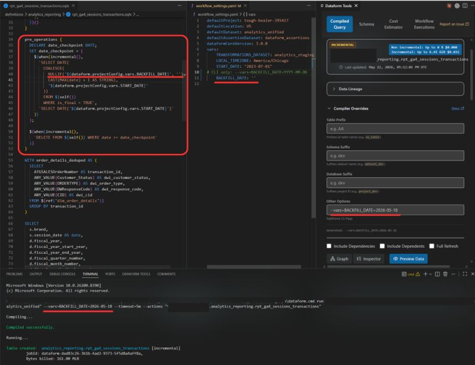

Backfilling incremental models in Dataform with a compilation variable
Historical backfills in Dataform used to mean one of two bad options: a full table refresh (slow and expensive), or hardcoding a date directly into the SQL, running it, and hoping you remember to revert it before the next scheduled run.
There is a better way: a compilation variable you pass at run time to reprocess only what you need, with no changes to your SQL.

-- the setup
My pipeline is built on top of
GA4Dataform by Superform Labs,
which uses a date_checkpoint pattern to handle GA4's 72-hour data
latency window. I extended it by adding a BACKFILL_DATE compilation
variable to my JS helpers.
In workflow_settings.yaml, the variable defaults to an empty string,
so scheduled runs behave exactly as before. When I need to reprocess historical
data, I pass a date via CLI:
dataform run --vars=BACKFILL_DATE=2026-05-18 --actions=my_model
-- the logic
- BACKFILL_DATE provided: use it as the start date
- Not provided: fall back to GA4Dataform's incremental checkpoint
- Empty table: fall back to the project
START_DATE
Surgical reprocessing. No code changes. No hardcoded dates to revert.
-- bonus: run it from VS Code
The Dataform Tools VS Code extension by Ashish Alex lets you set the compilation variable and run the compiled query directly from the editor. One click to preview exactly what will execute before you commit to a full run.
This pattern is part of the larger Unified GA4 analytics pipeline I own at Direct Wines, where reliable incremental processing across 8 brands makes full refreshes something I almost never need.
← back to notes